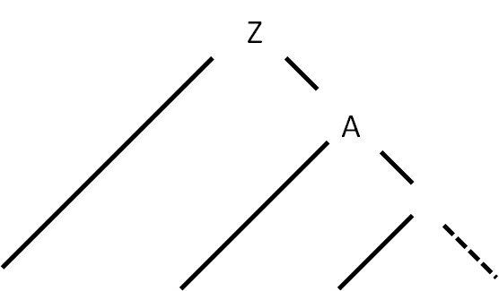

Суть метода Айронса заключается в следующем:
При обнаружении ошибки (во входной цепочке в процессе разбора встречается символ, который не соответствует ни одному из ожидаемых символов), входная цепочка символов выглядит следующим образом: Tt, где T – следующий символ во входном потоке (ошибочный символ), t – оставшаяся во входном потоке цепочка символов после T. Алгоритм нейтрализации состоит из следующих шагов:
Разрабатываемый синтаксический анализатор построен на базе автоматной грамматики. Реализация алгоритма Айронса для автоматной грамматики имеет следующую особенность.
Дерево разбора с использованием автоматной грамматики представлено на рисунке 2.

Рисунок 2 – Структура дерева разбора для автоматной грамматики
Таким образом, при возникновении синтаксической ошибки в процессе разбора с использованием автоматной грамматики, в дереве разбора всегда будет только один недостроенный куст (см. рисунок 3).
Рисунок 3 – Недостроенный куст при возникновении синтаксической ошибки (выделен пунктиром)
Поскольку единственный недостроенный куст – это тот, во время построения которого возникла синтаксическая ошибка, то это единственный куст, к которому можно привязать оставшуюся входную цепочку символов.
Предлагается свести алгоритм нейтрализации к последовательному удалению следующего символа во входной цепочке до тех пор, пока следующий символ не окажется одним из допустимых в данный момент разбора.